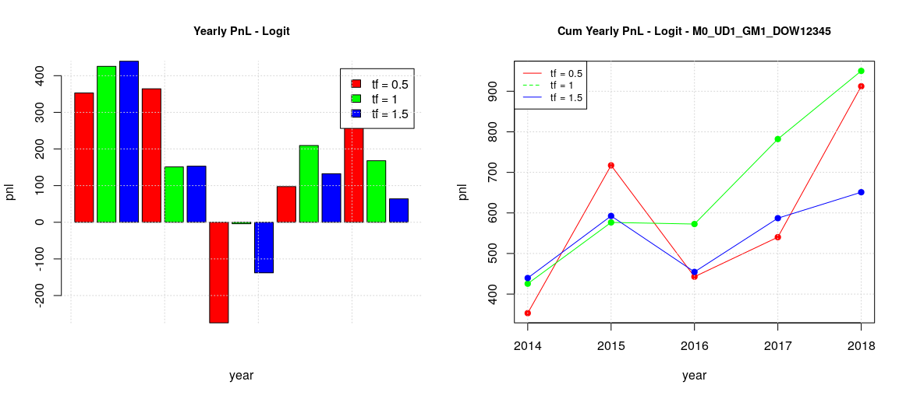

Forecasting Profits Direction: PnL Backtesting
In a previous post we developed a logistic model with walk-forward to forecast profits direction as extension of a random forest model with the hope to improve its forecasting capabilities. Unfortunately, we didn’t get any better metric (accuracy, sensitivity, etc) and the bare testing of pnl prediction in a single week didn’t provide better results either.
However, it is not possible to draw a general conclusion by testing a single case because most of the datasets coming from the financial markets are no stationary by nature, therefore no single case testing can be generalized. A common approach to decide whether a forecasting model is useful or not in trading is to perform a backtesting of the algorithm over datasets of several years. This is essentially a form of validation driven by simulation.
The backtesting of the baseline case (i.e. random forest model without walk-forward splitting) is absolutely not interesting, given that it doesn’t provide any useful pnl. Things change a bit when we apply walk-forward splitting: we can identify a positive pnl trend for a timeframe of half a year even if negative years (2015 and 2017) alternate to positive ones (2016, 2018 and 2019) and yearly pnl increments are absolutely not uniform. Generally speaking, it is important to look for strategies which have quite uniform pnl over the years, even if they are not always positive, because this is an indication that the “trading ideas” underlying the strategy are sound and therefore can be easily trusted; in addition, this avoid to manage the risk associated with the implicit volatility we would have in a strategy with non uniform pnl increments.
The logistic model with default threshold of 0.5 bring some interesting result: we have positive pnl over the years with quite uniform pnl increments in the case of a timeframe of one year. Despite the fact that the backtesting is limited to only 6 years, the result looks really promising.
Pushing a bit forward the exploration we found that different days have different pnl behaviors, in particular our experiments showed that:
-
Tuesday, Thursday and Friday (TTF) can be grouped together, having a similar behavior (first image)
-
Monday and Wednesday (MW) can also be grouped together (second image)
The origin of positive pnl in the previous global plot (all the days of the week together) seems to be the positive behavior of Monday and Wednesday as it is quite apparent considering the timeframe one year. MW results are still positive even in the other timeframes, but such positive contributions are reduced in the global plot by the negative effect of the other days of the week. Considering the whole period of 5 years, TTF contributions are limited whatever timeframe is chosen while MF cumulative contributions are growing on average.
Since we discovered that the days of the week can be split in two sets where our strategy has quite different pnl behaviors, we investigated the effect of training our models on the two different sets (i.e. local training) instead of having a single training on the global set and then a local forecasting like we did before. The results are quite interesting:
-
There is now is a positive configuration for the TTF group, timeframe 6 month, while before all the configurations were negative. This indicates that global training with the MW dataset interfere in a negative way toward the learning of TTF and when such interference is removed, a useful forecasting model could be retrieved.
-
Something different happens for the MW group. All the previous positive MW forecasting suffers from the splitting of training models and this suggest that training with the TTF dataset interfere in a positive way toward the learning of MW. It looks like there is a sort of “causal-effect” relationship between the trading on TTF and MW.
For the moment, the best trading configuration is: 1) a global training model with timeframe of 1 year for MW and 2) a local training with timeframe of 6 months for TTF. This will provide a cumulative pnl of about 1600 in the 5 years, which is much higher than the optimal pnl of the basic logistic model (pnl around 900 with timeframe of 1 year).
We previously saw that pnl can be improved by considering the optimal threshold of a classifier but unfortunately such threshold can only be a posterior computation. However, we can still try to approximate it, for example by assuming that the optimal threshold of a given week should not be too far from the one of the previous week or it should be a linear combination of the threshold of the previous weeks. For the moment we are going to start with a very basic method, we can start assuming a naive estimator of optimal threshold by considering as estimation of the optimal threshold of the current week the actual optimal threshold of the previous week. Repeating all the previous training/forecasting considering all the days of the week, then two day groups, local and global training, we will get the following results:
-
The best configuration for MW is still the global training model with timeframe of 1 years. Actually, we got a total pnl just over 1000 which is even better of the previous case.
-
The best configuration for TTF is still the local training model, as before, but with timeframe of 1 years this time, instead of 6 months. The pnl is more or less the same, just over 800. It is interesting to observe that in this case the shapes for any timeframe are very similar between the training with the default threshold and the actual estimator. This can explain why there is not improvement in the total pnl, being not so sensitive to the threshold value.
The fact that adopting an estimated optimal threshold didn’t changed the overall picture was unexpected, so I wanted to try to see what happened if the optimal threshold was computed not on a plain ROC where all the possible thresholds are present but on a sort of “constrained ROC” where only the thresholds which have a minimum level of specificity are taken into account. So recomputing the backtesting for the case where ROC specificities are bigger than 0.75 resulted on the following results:
-
The plot in the case of global training for the whole week has shapes similar to the previous naif estimator and not so different from the baseline case.
-
The plots in the case of global/local training and split week (TTF vs MW) are also similar to the previous ones.
So, the conclusion is that there is no benefit in constraining the level of specificity for the classifiers.

In summary, the backtesting was successful to validate the usefulness of the developed logistic model with walk-forward validation for our dataset of CAC40 trades. It also helped to identify the optimal configuration to maximize the total pnl:
-
Split the week in two sets, MW and TTF
-
Adopt a global training model with timeframe 1 year, default 0.5 threshold for MW
-
Adopt a local training model with timeframe 6 months, default 0.5 threshold for TTF